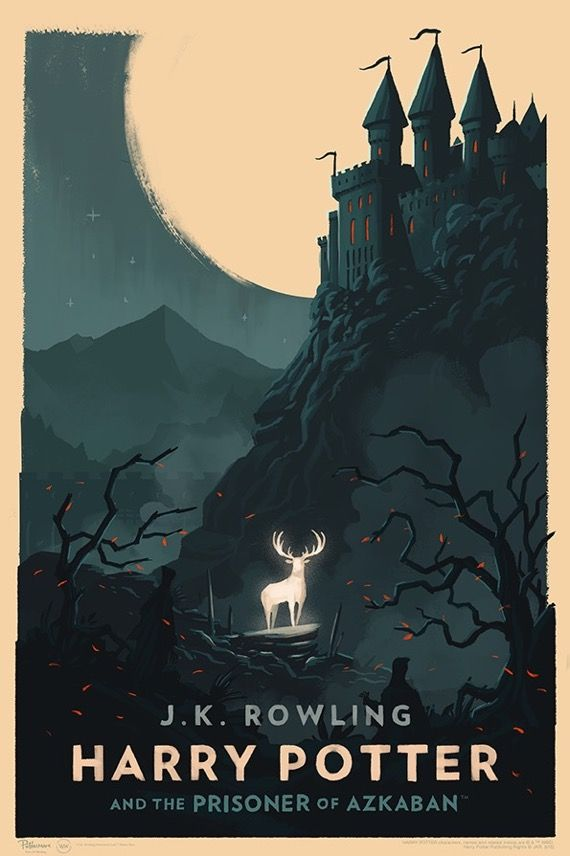
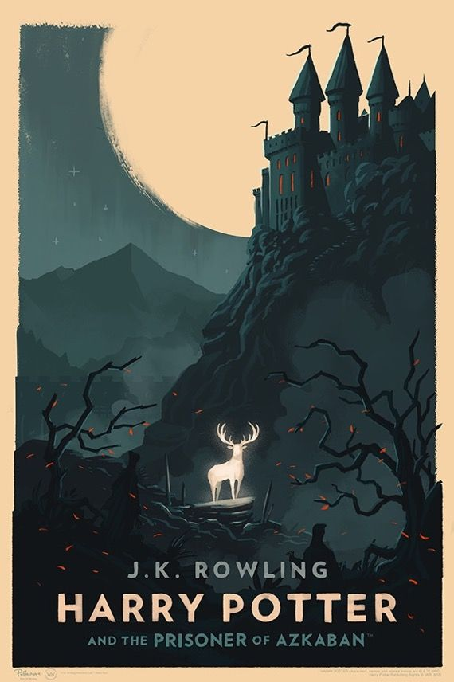

|
Sempre gostei de ler, quando eu era criança eu tinha uma grande paixão por escrever histórias, eram histórias bobas mas em algum momento a paixão pela escrita e pela leitura e pela escrita ficaram maiores. Hoje em dia eu não leio tanto quanto antes, infelizmente, mas aindaamo tanto ler.
Quanto mais longe da realidade melhor para mim, o mais místico e mais fictício melhor.
|

 
